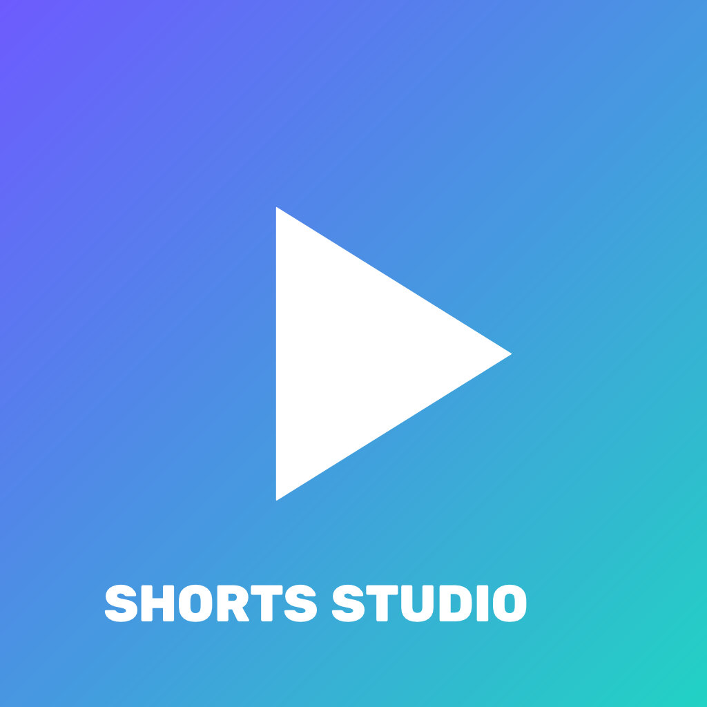

Ferramenta pessoal para Windows que corta vídeos e trechos de lives em clipes verticais, edita e publica na conta do próprio usuário no TikTok, usando o login e a API oficiais do TikTok.
Termos de Uso · Política de Privacidade
Contato: vtrjoaomaia@gmail.com